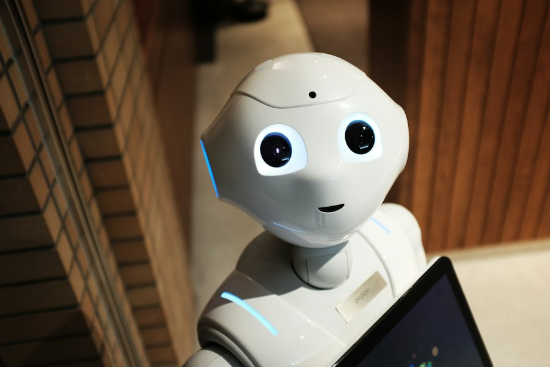
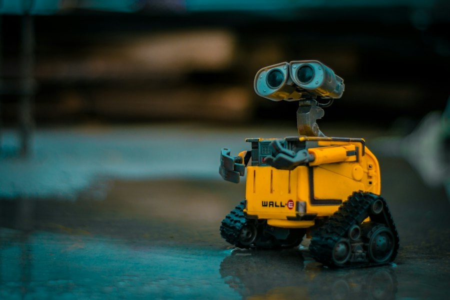

Arduino asoslari
Elektronika sxemalarini o'qish, sensorlar bilan ishlash, linya yig'ish.
Arduino, Python, 3D-printer va sun'intellekt — birinchi robotingizni bugun yig'ing.
Har bir yo'nalish haftasiga ikki mashg'ulot, nazorat loyihasi va yakuniy himoyadan iborat.
Elektronika sxemalarini o'qish, sensorlar bilan ishlash, linya yig'ish.
Raspberry Pi ustida Python, GPIO bilan ishlash, kameradan rasm tanish.
Fusion 360 da model yasash, STL tayyorlash, chop etish parametrlari.
Ma'lumotlar to'plash, oddiy neyron tarmoq, robotga ko'rish qo'shish.


2025 ca «Arduino Cup» musobaqasining eng qiziq lahzalari.
«Arduino Cup 2025» — klub binosida o'tkazildi.